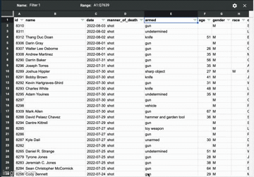

7 Sorting and filtering to find stories
7.1 A sorting miracle
After police in Ferguson, Mo., killed Michael Brown in 2014, advocates and journalists began examining the racial and ethnic gaps between police departments and the communities they served.
The New York Times found a 7-year-old survey conducted by the Justice Department that allowed it to compare the data for major cities in a standalone graphic that it published later that year.
When newer data reflecting departments’ makeup in 2012 was released a year later, Matt Apuzzo and Sarah Cohen hoped it would show some differences. It didn’t. So we were left trying to find news in the data that was clearly of public interest.
Cohen matched up the demographics of police departments with their cities and then started sorting, filtering and Googling. Could there be news in the outliers on the list? Which departments most closely represented their communities? Which ones had unusually large gaps?

Cohen quickly stumbled on telling anecdote to frame the story: Inkster, Mich. had one of the least representative departments in the country, and had recently hired a new police chief to help mend the department’s fraught relationship with its largely African-American community. Where had he come from? Selma, Ala., one of the most representative police departments in the nation. Interviews with the chief, William T. Riley III, suggested one reason for some cities’ disparities: there was no state or federal money to pay for training new police officers.
The story, “Police Chiefs, Looking to Diversity Forces, Face Structural Hurdles” helped explain the persistent gap between the makeup of police in some areas and the communities they served.
7.2 Sorting and filtering as a reporting tool
Sorting and filtering can:
- Narrow your focus to specific items that you want to examine in your story.
- Show you rows containing the highest and lowest values of any column. That can be news or it can be errors or other problems with the data.
- Let you answer quick “how many?” questions, with a count of the rows that match your criteria. (In the next lesson, you’ll see that pivot tables, or group-by queries, are much more powerful for this in most cases.)
7.3 Example data
Data from the Washington Post police shootings database for use in this tutorial - Documentation from the Post’s github site :::
The data for this and several other chapters is the Washington Post’s public data collection of police shootings in the U.S. It includes the nation’s best guess about each fatal police shooting since 2015. There are a couple of caveats:
It excludes deadly police interactions other than shooting a firarem at the suspect. Any strangulation, car crashes, Tasers without guns or other methods are excluded.
It is based primarily on news reports and the results public records requests so it often contains the story as told by police. We know that many of those reports are sugar-coated at best, and lies at worst.
The Post says this is a list of fatal shootings, but doesn’t say what happens if more than one person is killed. The 2019 shooting of D’Angelo Brown & Megan Rivera in West Memphis is shown as two rows1 in the data even though it was one event. So each row might be considered a shooting “victim”, a “suspect” or a shooting “fatality” rather than a “shooting”.
The screenshots in this tutorial may not match exactly to what you get on the Washington Post data. This tutorial used data current to Aug. 3, 2022.
It’s a good example set for us because it’s been used as the basis of many stories, it has at least one of each data type that we plan to deal with in Google Sheets, and it is well documented on the Post’s github site.
7.4 Get the data into Google Sheets
Download the police shooting data from the Washington Post
Open Google Sheets. File | Import | Upload | Select the downloaded file “fatal-police-shootings-data.csv” . After it uploads, select the green “Import Data” button.
7.5 Understanding data types
When you open the spreadsheet, the first thing to notice is its granularity. Unlike Census or budget spreadsheets, this is a list capturing specific characteristics of each fatality Each column has the same type of data from top to bottom. Those types are:
Text. Text or “character” columns can come in long or short form. When they are standardized (the values can contain only one of a small list of values), they’re called “categorical”. If they’re more free-form, they’re might be called “free text”. The computer doesn’t know the difference, but you should. The Post data has examples of both. In spreadsheets, text is left-justified (they move toward the left of the cell and will line up vertically at the beginning)
Numbers. These are pure numbers with no commas, dollar signs or other embellishments. In Google Sheets, as we’ll see in the computing section, these can be formatted to look like numbers we care about , but underneath they’re just numbers. Adding up a column of numbers that has a word in it or has missing values will just be ignored in Google Sheets. It will trip up most other languages. These are right-justified, so the last digit is always lined up vertically.
Logical: This is a subset of text. It can take one of only two values – yes or no, true or false. There is no “maybe”.
Date and times: These are actual dates on the calendar, which have magical properties. Underneath, they are a number. In Google Sheets, that number is the number of days since Jan. 1, 1900.2 They can also have time attached to them, which in Google Sheets is a fraction of a day. What this means is that the number 44,536.5 is really Dec. 6, 2021 at noon. In Google Sheets, you use a format to tell the spreadsheet how you want to see the date or time, just the way you look at dollar values with commas and symbols. (If you get a spreadsheet with a lot of dates of 1/1/1900, it means there is a 0 in that column, which is sometimes a fill-in for “I don’t know.”)
Here’s a picture of a date that is shown in a variety of formats.

All of these are the same, underlying value – the number at the left. Notice that all of these are right-justified.
This means that when you see “Friday, December 10”, the computer sees 44540.87431. When you put the dates in order, they won’t be alphabetized with all of the Fridays shown together. Instead, they’ll be arranged by the actual date and time.
It also means that you can compute 911 response times even when it crosses midnight, or or compute the someone’s age today given a date of birth. Keeping actual calendar dates in your data will give it much more power than just having the words. (Google Sheets uses the 1st of the month as a stand-in for an actual date when all you know is the month and year.)
7.5.1 Sorting rows
Sorting means rearranging the rows of a data table into a different order. Some reporters take a conceptual shortcut and call this “sorting columns”. That thinking will only get you into trouble – it lets you forget that you want to keep the rows in tact while changing the order in which you see them. In fact, in other languages it’s called “order by” or “arrange” by one or more columns – a much clearer way to think of it.
In Google Sheets, look for the sort options under the Data tab at the top of your screen. In this case, sorting from oldest to newest gives you a list of the fatalities in chronological order, including the time of day.
To sort your data:
- Make a copy of your data. Left click on the “fatal-police-shootings-data” tab, select Duplicate
- Select your data by clicking the box above Row 1 and to the left of Column A
- Select Data | Sort Range | Advanced Range Sorting Options
- Click “Data has header row” and then select date from the Sort by dialog box. Select Z –> A
- Select Sort
Adding fields to the sort
Adding more columns to the sort box tells Google Sheets what to do when the first one is the same or tied. For example, sorting first by state then by date gives you a list that shows all of the events by state in sequence:

7.5.2 Filtering
Filtering means picking out only some of the rows you want to see based on a criteria you select in a column. Think of it as casting a fishing net – the more filters you add, the fewer fish will be caught.
To activate filters in Google Sheets, from the Menu:
- Data | Filter Views | Create a New Filter View
- You’ll see little triangles next to the column headings.
Click the “armed” heading. You will see options for various weapons. All are selected by default with a check mark. To select just “ax”, click on clear and then select “ax.” The sheet how is filtered to just weapons using an ax. To remove the filter, repeat the steps and “select all” and the entire sheet is displayed again.
Each filter you select adds more conditions, narrowing your net.
To find fatalities that involved a firearm with a Taser, use the drop-down menu under manner_of_death select “shot and Tasered”.
This method works for small-ish and simple-ish columns. If your column has more than 10,000 different entries, such as names or addresses, only the first 10,000 will be considered. We only caught these for stories when someone did a fact-check using a different method of filtering. If your column has a lot of distinct entries, use option that says “Choose One”, and then use the “Contains” option. Better yet, don’t use filtering for counting things at all.
Add more filters to narrow down your list of cases even more. For example, the New York Times ran a series of stories in 2021 about unarmed people shot by police. One story was about those who were fleeing by car. Here’s one way to get a preliminary list of those cases:
- Remove any filter you already have on.
- Turn on the filters again if you turned them off.
- Choose “unarmed” under
armedand “car” underflee.
(Of course, the Times didn’t stop there in trying to find more cases and teasing out more of them from this and other data. But this is a start. )

Different kinds of filters
There are several filter options. You can filter by various conditions. For numerical data, you can set a minimum or maximum value or a range of values. This is useful for dates to specify a certain time period. For text, you can filter if a word contains a few letters, useful to capture spelling variations.

Finding these is something that’s pretty hard in a spreadsheet but will be really easy in R.↩︎
Each language deals with dates and times a little differently. We’ll see how R does it later on. But just know that dates can be tricky because of these differences and time is even more tricky↩︎